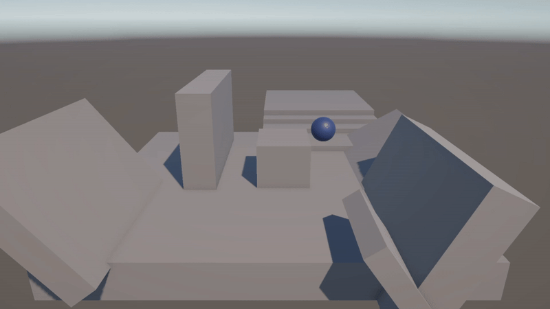
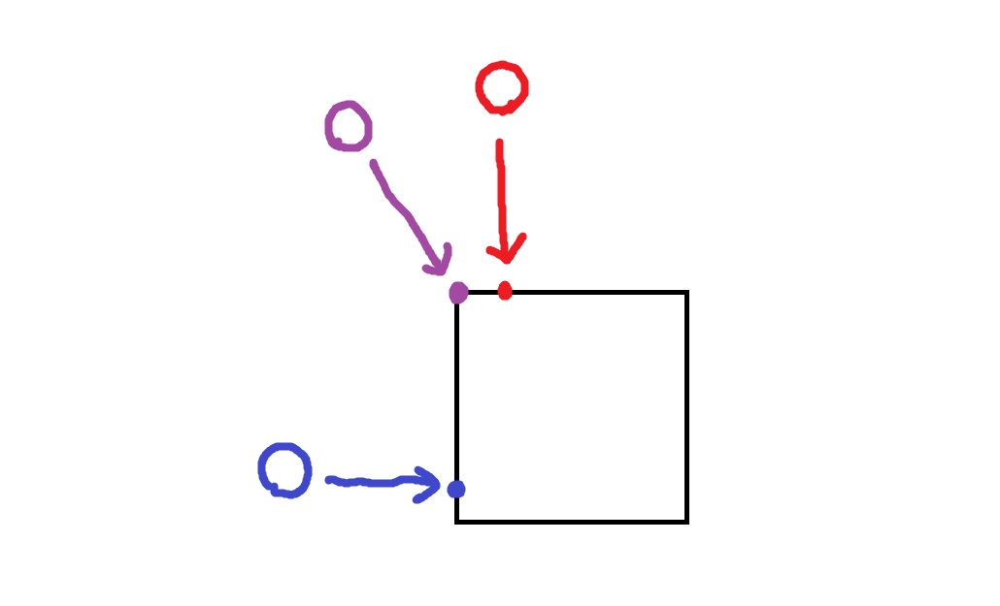
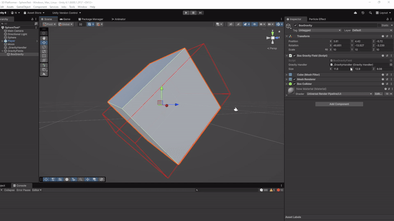

En tant que projet personnel j’ai choisi de créer un contrôleur 3D similaire à celui de Super Mario Galaxy dans Unity.
Pour ce projet j’ai d'abord créé mon propre contrôleur basique de plateformer 3D puis implémenté le système de gravité permettant de tourner autour d’une planète et de sauter entre elles. J’ai aussi programmé une caméra adaptée à ces contrôles. Et enfin ajouter quelques éléments de polish visuel.
Le but était de créer un prototype pour une démonstration technique plutôt qu’un projet de jeu plus complet.
Objectifs
Je voulais me challenger en créant mon premier character controller 3D. Celui de Super Mario Galaxy étant particulièrement unique, il pose beaucoup de problèmes intéressants à régler, ce qui m’a poussé à m'en inspirer.
Ce projet est aussi né d’une volonté de prouver de quoi je suis capable.
Une raison plus personnelle d’avoir choisi ce jeu est que j’y ai joué dans mon enfance et c'est en partie la raison pour laquelle les platformers 3D me passionnent autant aujourd’hui.
Ressources
Plusieurs ressources m’ont été utiles dans ce projet.
Cette vidéo m’a servi de point de départ pour mieux comprendre le système que j'essayais de recréer. La vidéo explique les grandes lignes du système de gravité de Super Mario Galaxy sans trop entrer dans les détails.
Et j’ai utilisé le système présenté dans cette vidéo pour gérer les collisions dans le projet.
Et bien sûr le jeu Super Mario Galaxy lui même à aussi été une ressource essentielle, j’ai passé beaucoup de temps à expérimenter dans le jeu pour comprendre tous les aspects de son système de gravité.
Aussi les assets visuels du projet ont été trouvé sur le Unity Asset Store
La première étape était donc de créer un contrôleur 3D simple pour les mouvements du personnage. Je n’ai pas utilisé de rigidbody parce que je voulais avoir plus de contrôle sur la façon dont le personnage bouge.

En créant ce contrôleur, j’essayais de garder en tête que la direction du sol devait être capable de changer plus tard. Cela m’a facilité la tâche quand il a fallu complètement implémenter cette mécanique. C’est aussi pour ça que j’ai utilisé une sphère pour les collisions pour éviter les problèmes de collisions lié au rotations.
Ensuite j’ai décidé d’implémenter le modèle 3D et les animations. C’était très important pour moi d’implémenter le personnage assez tôt car je trouve que les animations impactent énormément le game feel. Une fois cette étape terminée, je pouvais passer à la suite.
2. Système de gravité
Avant d’implémenter un système de gravité complexe, j’ai d’abord essayé de faire une version avec une seule planète ronde. Appliquer la gravité est assez simple, au lieu de faire accélérer le joueur vers le bas, il suffit de l’accélérer vers le centre de la planète cependant gérer l’orientation du joueur est beaucoup plus difficile. C’est à ce moment là que je me suis heurté à une des limitations du système des angles d’Euler. Il a fallu que j'apprenne à utiliser les quaternions.
Heureusement je n’ai pas eu à plonger trop profondément dans les mathématiques complexes car tout ce que j’avais besoin de comprendre était la multiplications entre quaternions et vecteurs ainsi que les différentes méthodes fournies par Unity.
Un des obstacles principaux était de gérer les déplacements horizontaux du personnage qui doivent être à la fois perpendiculaires au sens de la gravité et relatifs à l’orientation de la caméra.
Il y à eu pas mal de bugs à corriger en chemin.
(Beaucoup de peine attend celui qui oublie que les produits de quaternion ne sont pas commutatifs)
Aprés avoir corrigé ça, le seul problème restant était que le personnage du joueur avait tendance à tourner en rond si la direction que le jeu considère comme “devant” change brusquement en plein déplacement (généralement au pôle sud d’une planète). Ce problème à été résolu en recalculant uniquement l’orientation relative à la caméra quand le joueur change drastiquement de direction.
Enfin il ne restait plus qu'à implémenter le fait de passer d’un champ gravitationnel à un autre ainsi que d’autre formes de champs gravitationnels comme les cubes et cylindres.
J’ai compris que trouver le sens d'attraction d’un point dans un champ gravitationnel non-sphérique revient généralement à trouver son point le plus proche dans le volume.

Le système de gizmo de Unity a permi de rendre ces champs gravitationnels visibles dans l’éditeur ce qui est pratique pour les parametrer.

3. Caméra et polish
A ce moment-là, j'étais assez satisfait de ce que j’avais créé. Mais il restait un gros défaut, la caméra était statique. Cependant la caméra est au moins aussi importante que le personnage. J’ai donc commencé à réfléchir à un système compatible avec le projet.
J’ai fini par utiliser un système relativement simple mais qui permet d’assurer que le joueur reste clairement visible.
Ce système fonctionne en trois étapes.
La caméra se rapproche du personnage du joueur si elle est trop éloignée. Ensuite le jeu fait en sorte que la caméra soit toujours une certaine distance au-dessus de la tête du joueur (la définition de “au dessus” est dépendante du sens de la gravité bien sûr). Ainsi on garantit que la planète sur laquelle le personnage se trouve ne soit jamais entre lui et la caméra. Enfin il ne restait plus qu'à orienter la caméra vers le joueur et appliquer du smoothing au changement d’angle et de position pour avoir un système de caméra relativement solide même si assez simpliste.
Pour améliorer le gamefeel j'ai ajouté un effet de particule à l'aterissage et une ombre projetée en dessous du joueur.
3. Conclusion
J’ai beaucoup appris grâce à ce projet. J’ai pu acquérir une bien meilleure compréhension de notions comme la gestion de collisions, les rotations en trois dimensions et l’Animation Controller de Unity. Je suis aussi très fier des problèmes que j’ai été capable résoudre par moi-même.